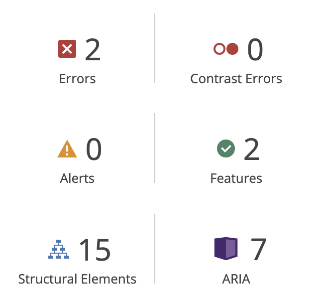
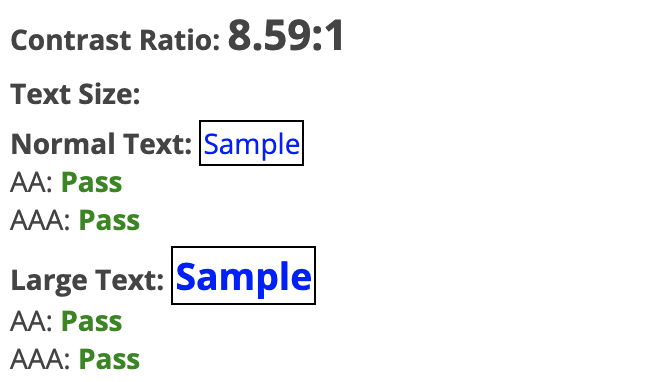

Kodebeslutninger
Automatisk test
Den automatiske testen gir kun to feil, som beror på at anker-elementene som inneholder logo og meny-burger ikke har noen tekst, men siden disse inneholder visuelle elementer ignorerer jeg disse feilvarslingene.
Testen oppgir også at siden inneholder språkdefinering og den lar skjermlesere ignorere ikoner som følger:
<!-- Definerer språket siden er skrevet i -->
<html lang="nb">
<!-- Gjør at skjermlesere ignorerer ikoner -->
<span aria-hidden="true">
Testrapport
Bilder
Alternativ tekst er også oppgitt på bilder som ikke er overskriftsbilder, men som er del av innholdet, og disse bildene er også hentet med html i stedet for css slik at de blir lastet selv om webklienten ikke laster styles.
Kontrastnivå
Ifølge w3schools som refererer til Apple, anbefales det en kontrastrate på minimum 4.5, helst 7. Dette nettstedet scorer 8.59.
Struktur
Siden er strukturert etter hovedelementene header, main og footer, deretter inndelt etter med nav, section og hierarkiske headers.
<html>
<header>
<nav>
<main>
<section>
<footer>
CSS
Responsivitet
Hva gjelder CSS-en så er den bygget opp «mobile first», og deretter skaleres den opp med @media query. Koden bryter kun på ett punkt siden det aldri er mer enn to kolonner og dermed ikke behov for ytterligere brytningspunkter.
@media (min-width: 800px) {
}
Det er også bevisst valgt at noen av selectorene er relative og nested slik at om man ville byttet en seksjon fra lys til mørk så endres også fargene på <p>, <h#> og <a> også automatisk. Andre elementer som knapper og kode-blokker, som man muligens vil ha mer styring på selv er designet med mulighet for å selv velge når man vil bruke mørk og lys variant, eksempelvis:
/*Relativ selector*/
.section-light a {
color: #0C1821;
}
/*Manuelt fargevalg*/
.code-blue-light {
color: deepskyblue;
}
.code-blue-dark {
color: midnightblue;
}
Strukturering av properties
Stylesheetet er bygget opp etter seksjoner og selvforklarende navngitte selektorer uten å dele det opp i strukturelle og visuelle deler, da jeg mener at i dette tilfellet er koden oversiktlig og kommentert nok som det er. Selektorenes properties er kategorisert som vist i kodeboksen under, og i én samlet fil.
/*Display*/
display: flex;
flex-flow: row nowrap;
/*Posisjonering*/
position: absolute;
bottom: 0px
left: 0px
/*Box-model*/
height: 400px;
width: 400px;
background-color: #FFF;
padding-left: 10%;
border: 2px solid #000;
margin: 30px
/*Typografi*/
color: #000;
font-family: oswald, sans-serif;
font-weight: 500;
/*Manipulasjon*/
transition: 0.3s;
/*Annet*/
box-shadow: 0px 0px 0px 6px rgba(43, 88, 122, 0.5);
Annet
Forms
Kontaktskjemaet gjør ikke noe aktivt men er klart til å tas i bruk. Tekst og tilhørende input-felt er lenket opp mot hverandre slik at feltet aktiveres om man klikker tilhørende tekst og slik at skjermlesere vet hvilken tekst som hører til hvilket felt. I tillegg er input type i feltet for telefonnummer satt til «tel» slik at på enheter med touch-tastaturer vil det trigge tastatur-oppsett for inntasting av telefonnummer med nummerisk tastatur og "*, #, +".
<label for="phone">Telefon:</label>
<input type="tel" id="phone" name="phone" placeholder="Ditt telefonnummer">
Lenker
Nettstedet drar også nytte av lenker med ulike typer lenkemål. Det benyttes lenker med ordinært eksternmål, internlenker til andre sider på nettstedet og ankermål lenket til et id-element på siden, eksempelvis "til topp". Når det gjelder kontaktinformasjon er lenkene på telefonnummer satt til å trigge et oppringt til gitt nummer, epost-lenke er satt til å åpne standard epostapp med epost-adresse fylt inn, samt adresse lenket til Google Maps slik at potensielle kunder lettest mulig kan starte veibeskrivelse rett til restauranten.
<!-- Lokalt med ankerpunkt -->
<a href="index.html#top">Til Topp</a>
<!-- Telefonnummer -->
<a href="tel:+47########">Telefon</a>
<!-- Google Maps i ny fane-->
<a href="https://goo.gl/maps/---" target="_blank">Adresse</a>
<!-- Epost -->
<a href="mailto:@">Epost</a>
Gjestereisen
Nettsiden legger også opp en ønsket gjestereise gjennom siden med ønske om konverteringer. Fra index.html får man først opp kort info om restauranten med en minimalistisk lenke til mer informasjon. Målet er å få gjesten til å scrolle seg videre og bli overbevist av tilbakemeldinger og menyen før de presenteres med en call to action som tar dem til kontakt-skjemaet. Alle ønskede handlinger er i form av buttons, mens andre muligheter er bare enkelt lenket. Gjennom hele nettstedet vil man bli geleidet til kontaktskjemaet uansett hvilken rute man tar slik at ikke gjesten selv må oppsøke kontaktinformasjonen, men heller blir presentert den uansett klikkvalg.